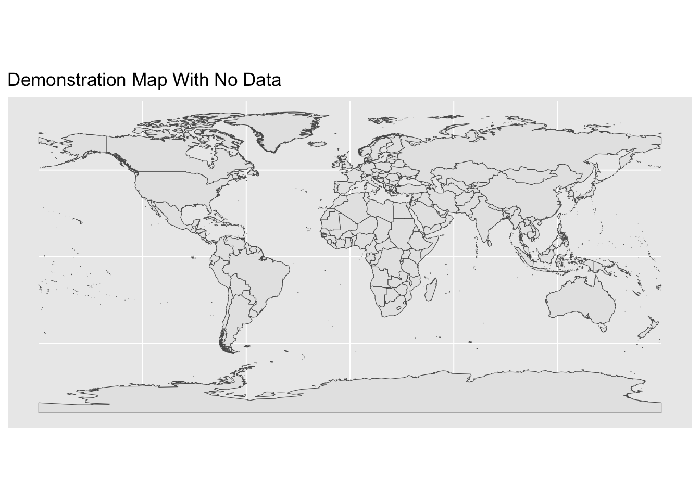
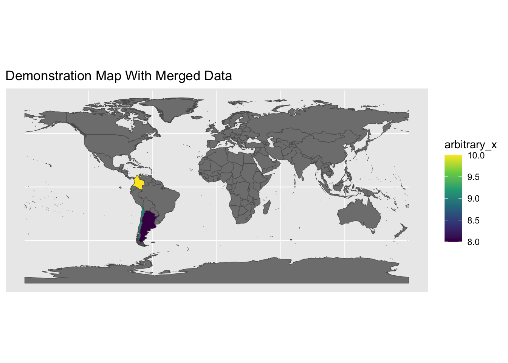

Show the code
library(sf) # simple (spatial) features
library(ggplot2) # beautiful plots
library(dplyr) # data wrangling and joins
library(tibble) # library for updated dataframes
library(readr) # read CSV filesA common task in mapping is that I have a shapefile of map data, but want to merge in some external data from another source so that I can map that external data. Usually I want to use different colors to map that external data.
Here, I use a shapefile of countries of the world, and map it with some made up data of arbitrary and made up x values for certain countries.
This tutorial builds upon another tutorial on mapping with ggplot.
library(sf) # simple (spatial) features
library(ggplot2) # beautiful plots
library(dplyr) # data wrangling and joins
library(tibble) # library for updated dataframes
library(readr) # read CSV filesHere I am using the wrld_simpl dataset of country outlines that is available in several R packages. I read this data into an object called world.
world <- read_sf("../shapefiles/wrld_simpl/wrld_simpl.shp")I map the data with ggplot, and the special geom, geom_sf.
ggplot(world) +
geom_sf() +
labs(title = "Demonstration Map With No Data")
Here I read in a completely made up data set of arbitrary values. The file that I am reading in is a csv file, but could be a file in any number of formats.
externaldata <- read_csv("externaldata.csv")
externaldata # replay data set# A tibble: 3 × 3
...1 ISO3 arbitrary_x
<dbl> <chr> <dbl>
1 1 COL 10
2 2 CHL 9
3 3 ARG 8I use left_join from the dplyr package to merge the spatial data in world with externaldata.
left_join is a function that keeps all observations in the data on the left (the shapefile), and only those matching observations in the data on the right (the external data), which is usually what I want in mapping.
I need a unique identifier for my rows of data, so here I use ISO3, a unique 3 letter identifier for countries of the world.
newdata <- left_join(world, externaldata, by = "ISO3")Once I have the merged data, it is easy to map it with ggplot and geom_sf. Note that I need to specify an aesthetic for geom_sf. Here arbitrary_x is the fill color for countries on the map.
ggplot(newdata) +
geom_sf(aes(fill = arbitrary_x)) + # adding a fill aesthetic
scale_fill_viridis_c() + # beautiful viridis colors
labs(title = "Demonstration Map With Merged Data")